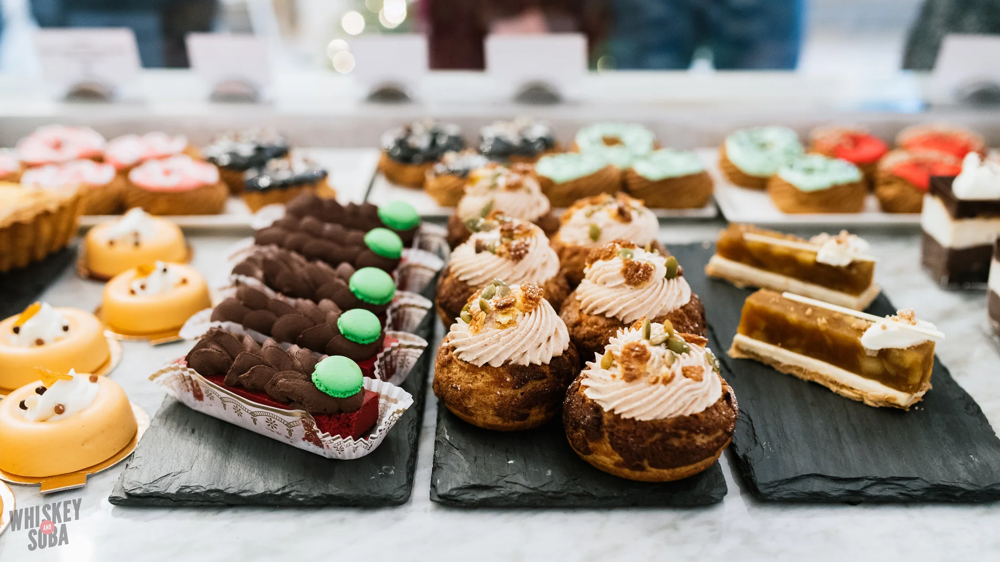
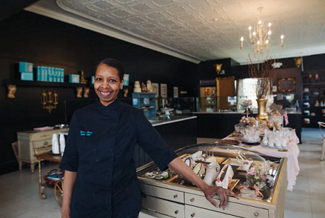

La Pâtisserie Chouquette
It’s so easy to say “yes!”

La Pâtisserie Chouquette is a small bakery located in STL that specializes in french inspired pastries. Every month we have have make themed treats and we go all out in Halloween, so prepare in advance! We are the perfect place to catch up with your loved ones over some amazing coffee and delicious pastries. Click here to order!
Call us at: (314) 932-7935
We are located here 1626 Tower Grove Ave, St. Louis, MO 63110